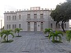
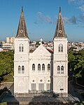
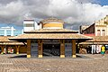
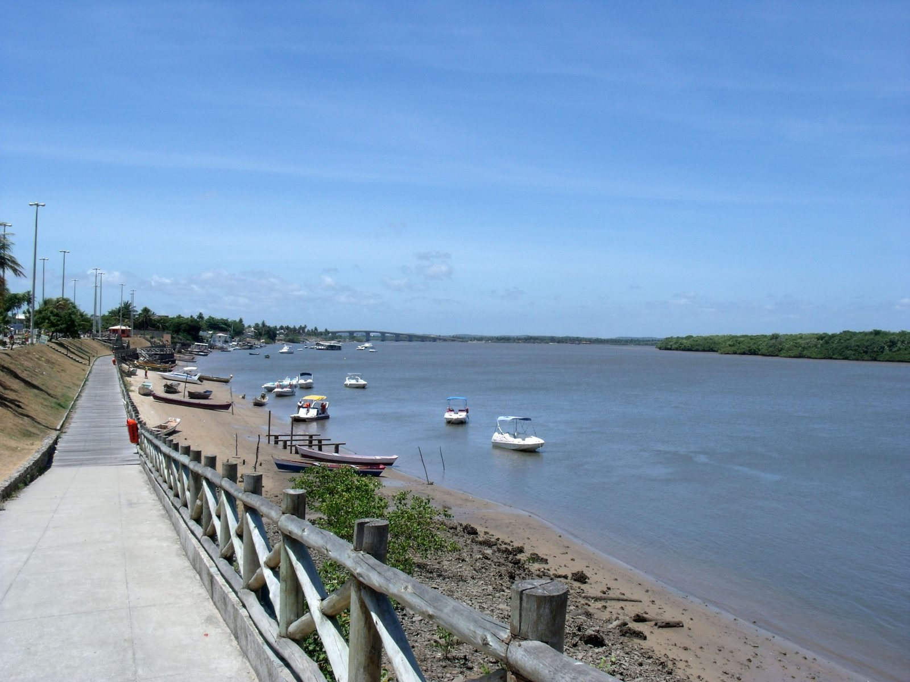
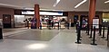
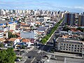

Multimédia
Aracaju tem praias, parques e paisagens que podem ser apresentados através de fotografias e vídeos.

Aracaju: onde o rio encontra o mar.
Fotografias







Aracaju em movimento
Uma cidade para observar, sentir e descobrir.
Vídeo
Poesia
Aracaju, cidade de mar e luz,
Onde o rio encontra o céu azul,
Nas tuas praias mora a calma,
E Sergipe vive em tua alma.
Entre o rio e o mar
As paisagens de Aracaju mudam com a luz, a maré e o movimento da cidade.